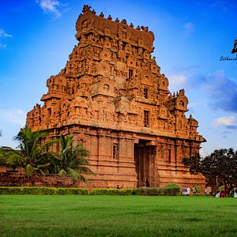
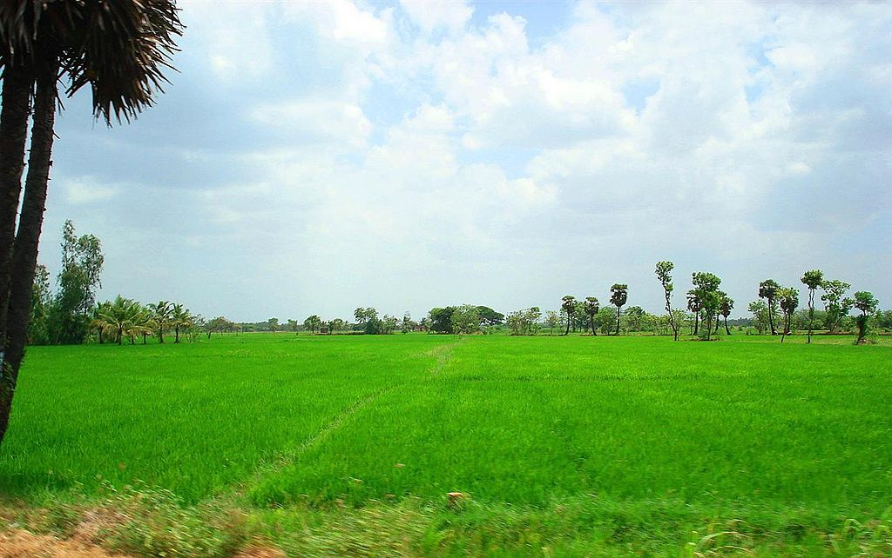
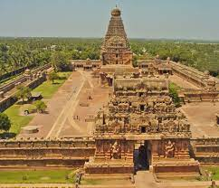
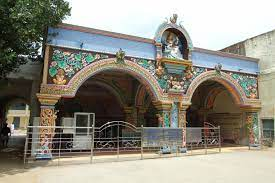

MY HOME TOWN IS THANJAVUR

HISTORY
Later the medieval Chola king , Visayalaya Chola ruled from 848 AD to 878 AD. Visalaya Chola Nishumbasudhani , who captured Thanjavur from the Muttara king Ilango Muttari, built the temple. His son Aditya Chola (871-901) fortified the rest of the city. Thanjavur later became the capital of the Cholas. Thanjavur became famous during the reign of Rajaraja Chola (985-1014). Thanjavur was the most important city of the Chola dynasty until the emergence of Gangaikonda Cholapuram in 1025 . [3] [4] In the eleventh century, the Chola king Rajaraja Chola I (985-1014) built the Peruvadiyar Temple in Thanjavur .Built. This temple is considered to be special for Tamil architecture . [5] [6] [7] Rasendra Chola, son of Rajaraja Chola, died in AD. Around 1025 he shifted his art city from Thanjavur to Cholapuram with the Ganges.
AD The Tanjore Empire collapsed in the 13th century with the rise of the Pandyan kings of Madurai. Thanjavur came under the rule of the Vijayanagara government after the fall of the Pandyas . AD The reign of the Nayaka kings begins in 1532 in Tanjore . Sokkanathar AD, the Nayaka king of Madurai, ruled with Trichy as his capital. In 1673 he invaded Thanjavur. Vijayaraja was defeated in the battle and was martyred on the battlefield. Tanjore government merged with Madurai Nayaka government. [8
ECONOMY
The people here have traditionally been engaged in agriculture as a profession. Thanjavur is known as the 'Granary of Tamil Nadu'. [13] [14] Paddy and other crops such as black gram , banana , coconut , ginger , cardamom , sorghum , mustard , sugarcane and maize are also grown here. There are three seasons for farming in Thanjavur - Kuruvai (June to September), Samba (August to January) and Thaladi (September, October to February, March). [15] The Cauvery River flows hereIt is primarily for irrigation and the daily needs of the people. [16] Thanjavur is an important silk weaving city in Tamil Nadu . [17] In 1991 there were 200 silk weaving units in the city, employing 80,000 people. Sarees made in the villages around Thanjavur are sold in Thanjavur and neighboring cities.
But due to production costs and competition from large-scale manufacturers, the number of people involved in production has decreased.
The city produces a large number of musical instruments such as veena, tambourine , violin , myrtle , thavil , and kanjira .
SPECIALS
It is called the granary of Tamil Nadu.
Became the capital of the Cholas . There is a large temple that is a world famous heritage icon.
The world-famous Tanjore Saraswati Library owns the library.
Hundreds of rare manuscripts not found in the library have been collected and preserved.
Thanjavur is home to the first university in the world for Tamil.
The geographically coded Thanjavur paintings and artefacts are world famous.
The geographically coded Thanjavur head doll is world famous.
The geographically coded Thanjavur Veena is world famous.
It is the district with the most temples.
TOURIST SITES
Tanjore Big Temple is a World Heritage Site
Tanjore Saraswati Magal Library (The oldest library in Asia)
.jpeg)